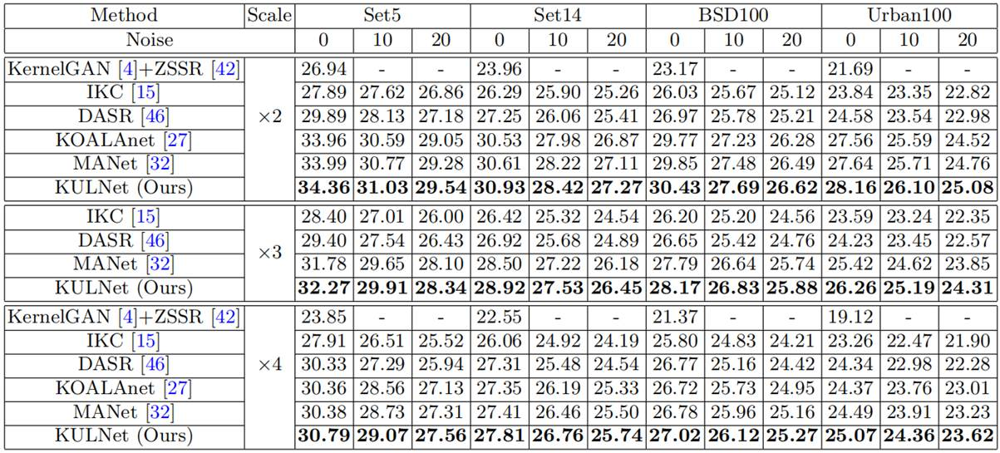
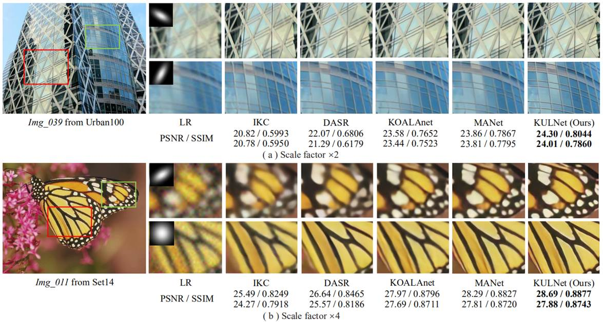
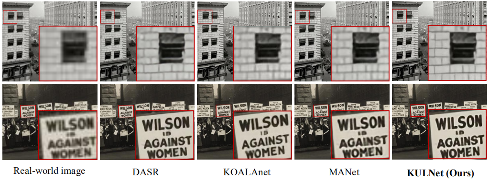

Abstract
Conventional wisdom in blind super-resolution (SR) first estimates the unknown degradation from the low-resolution image and then exploits the degradation information for image reconstruction. Such sequential approaches suffer from two fundamental weaknesses - i.e., the lack of robustness (the performance drops when the estimated degradation is inaccurate) and the lack of transparency (network architectures are heuristic without incorporating domain knowledge). To address these issues, we propose a joint Maximum a Posteriori (MAP) approach for estimating the unknown kernel and high-resolution image simultaneously. Our method first introduces uncertainty learning in the latent space when estimating the blur kernel, aiming at improving the robustness to the estimation error. Then we propose a novel SR network by unfolding the joint MAP estimator with a learned Laplacian Scale Mixture (LSM) prior and the estimated kernel. We have also developed a novel approach of estimating both the scale prior coefficient and the local means of the LSM model through a deep convolutional neural network (DCNN). All parameters of the MAP estimation algorithm and the DCNN parameters are jointly optimized through end-to-end training. Extensive experiments on both synthetic and real-world images show that our method achieves state-of-the-art performance for the task of blind image SR.
Paper & Code & Demo
Experimental Results
Table 1. Quantitative comparison of the SOTA blind SR methods and the proposed method on various datasets and noise levels.
Result Visualization
Figure 1. Visual comparison to other methods. The blur kernels are illustrated on the top left. Noise levels are set to 0 and 10 for scale factor ×2 and ×4, respectively.
Figure 2. Visualization results of different methods on real-world images upscaled by ×4.
Citation
@inproceedings{fang2022uncertainty,title={Uncertainty Learning in Kernel Estimation for Multi-stage Blind Image Super-Resolution},
author={Fang, Zhenxuan and Dong, Weisheng and Li, Xin and Wu, Jinjian and Li, Leida and Shi, Guangming},
booktitle={European Conference on Computer Vision},
pages={144--161},
year={2022},
organization={Springer}
}
Concat
Zhenxuan Fang, Email: zxfang@stu.xidian.edu.cn
Weisheng Dong, Email: wsdong@mail.xidian.edu.cn
Xin Li, Email: xin.li@mail.wvu.edu
Leida Li, Email: ldli@xidian.edu.cn
Jinjian Wu, Email: jinjian.wu@mail.xidian.edu.cn
Guangming Shi, Email: gmshi@xidian.edu.cn
Comment